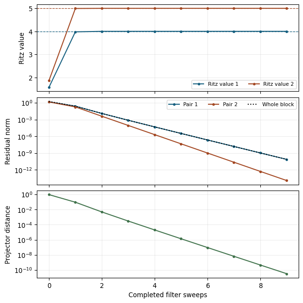

Session 9 produced a plane whose images under repeated matrix multiplication approached a wanted invariant plane. Session 10 replaced multiplication by \(A\) with a polynomial \(p_m(A)\) that selects spectral components deliberately. Suppose the resulting plane is already very accurate. Which way should we point within that plane to obtain an eigenvector? Even an exact invariant plane admits infinitely many orthonormal bases, most of which mix its eigenvectors.
Study route (75 minutes). Allow 15 minutes for compression and the Rayleigh quotient, 17 for residuals and the three worked examples, and 15 for the algorithm and synthesis. Reserve 28 minutes for the five exercises. The computational laboratory and generalized problem are supplementary. Throughout, \(A=A^*\in\mathbb F^{n\times n}\), where \(\mathbb F\) is \(\mathbb R\) or \(\mathbb C\), and the star denotes conjugate transpose. Vector norms are Euclidean and matrix norms are induced \(2\)-norms unless indicated otherwise.
12.1 What equation can a trial space satisfy?
Let \(\mathcal U\) have dimension \(p\) and let \(Q\in\mathbb F^{n\times p}\) contain an orthonormal basis. Every candidate in \(\mathcal U\) has the unique form \(u=Qz\), where \(z=Q^*u\). Session 1 reduces the unknowns from \(n\) coordinates to \(p\). Session 2 supplies the isometry \(\|Qz\|_2=\|z\|_2\), so coordinate errors and physical vector errors have the same length.
Requiring \(AQz=\theta Qz\) would require \(\mathcal U\) to contain an exact eigenvector. A generic line in the plane already shows the difficulty: its image need not lie along it. Ask instead whether the equation holds when tested against every direction we can represent. For \(z\ne0\) define \(r=AQz-\theta Qz\). Then
\[
\begin{aligned}
r\perp\mathcal U
&\iff (Qw)^*r=0\quad\text{for every }w\in\mathbb F^p\\
&\iff Q^*r=0\\
&\iff Q^*AQz=\theta Q^*Qz=\theta z.
\end{aligned}
\]
Note
Rayleigh–Ritz extraction. Form \(H=Q^*AQ\), solve \(Hz_i=\theta_i z_i\) with \(\|z_i\|_2=1\), and lift \(u_i=Qz_i\). The Ritz value is \(\theta_i\) and the Ritz vector is \(u_i\). The pair is defined relative to \(\mathcal U\). Its residual in the original problem is \(r_i=Au_i-\theta_i u_i\).
The dimensions follow the calculation: \(AQ\) is \(n\times p\) and \(Q^*(AQ)\) is \(p\times p\). Since \(H^*=Q^*A^*Q=H\), the spectral theorem gives \(HZ=Z\Theta\) with a unitary \(Z\) and real diagonal \(\Theta\). The lifted matrix \(U=QZ\) satisfies \(U^*U=I_p\). Thus extraction rotates the coordinates within the same space. If a wanted direction is orthogonal to \(\mathcal U\), none of these combinations can reach it.
What has been projected?
With \(P=QQ^*\), Session 3 gives the orthogonal decomposition
Think of \(Au\) as a vector and \(PAu\) as its shadow in the trial plane. A Ritz direction \(u\) is one whose shadow after applying \(A\) is exactly \(\theta u\). The remaining perpendicular component is then precisely its residual. The map \(PA|_{\mathcal U}\colon\mathcal U\to\mathcal U\) is the compression. Its coordinate matrix is \(H\). On the whole ambient space \(PAP=QHQ^*\) also annihilates \(\mathcal U^\perp\); this accounts for the additional zero directions in that representation.
A change of orthonormal basis \(Q'=QS\), with \(S\) unitary, gives \(H'=S^*HS\). The coordinates \(z'=S^*z\) lift to \(Q'z'=Qz\). Ritz values and lifted Ritz eigenspaces depend only on the plane. Individual unit vectors retain a sign or complex phase choice, and a repeated Ritz value permits any orthonormal basis of its lifted eigenspace.
A variational interpretation
For \(v\ne0\) write \(\rho_A(v)=v^*Av/(v^*v)\). Since \(\rho_A(Qz)=\rho_H(z)\), each unit Ritz vector satisfies \(\theta_i=u_i^*Au_i\). Write \(z=Zc\) with \(\|c\|_2=1\). Then
\[
\rho_A(Qz)=\sum_{i=1}^p |c_i|^2\theta_i.
\]
This weighted average attains its smallest and largest values at eigenvectors of \(H\). Consequently the extremal Ritz values are the minimum and maximum of \(\rho_A\) over the trial space. Restriction gives \(\lambda_{\min}(A)\le\theta_{\min}\le\theta_{\max}\le\lambda_{\max}(A)\). Enlarging the space can only decrease its minimum and increase its maximum. Interior Ritz directions are stationary directions: for a unit \(u\) and a variation \(w\in\mathcal U\), the derivative at \(t=0\) of \(\rho_A(u+tw)\) for real \(t\) is \(2\operatorname{Re}(w^*(Au-\rho_A(u)u))\). Vanishing for every \(w\) is exactly the Galerkin condition (in complex space one may also test \(iw\)). This specifies the sense of optimality. Minimizing the ambient residual over all unit vectors in the space would be a different optimization problem.
12.2 How much of the action escapes the space?
Definition. The block invariance residual is \(R=AQ-QH\). Substitution of \(H\) gives
\[
R=(I-P)AQ,\qquad Q^*R=Q^*AQ-H=0.
\]
Its norm measures the largest perpendicular component produced by applying \(A\) to any unit vector in \(\mathcal U\). Hence \(R=0\) exactly when \(A\mathcal U\subseteq\mathcal U\). With small \(\|R\|_2\) relative to the scale of \(A\), we call the space approximately invariant in this residual sense. Identifying it with a particular wanted space requires further evidence.
Thus exact invariance gives exact eigenpairs throughout the lifted basis. One exact pair only requires \(Rz_i=0\). For the full Ritz basis \(AU-U\Theta=RZ\), so its matrix \(2\)-norm is \(\|R\|_2\) and the sum of squared column residual norms is \(\|R\|_{\mathrm F}^2\). Orthogonality holds even when the residual is large. It verifies extraction algebraically; its magnitude measures the remaining defect.
Worked example 1 — Extracting two directions from the Session 9 plane
Take \(A=\operatorname{diag}(6,3,1)\). One ordinary subspace sweep starting at \(\operatorname{span}\{e_1,e_2+e_3\}\) gives the plane spanned by \(v=e_1\) and \(w=(3e_2+e_3)/\sqrt{10}\). To see extraction do real work, represent the same plane by \(Q=[(v+w)/\sqrt2,(v-w)/\sqrt2]\). Its columns are orthonormal because \(v,w\) are orthonormal. The plane is proper and \(Aw=(9e_2+e_3)/\sqrt{10}\) leaves it.
Since \(v^*Av=6\), \(w^*Aw=28/10\) and \(v^*Aw=0\), direct multiplication gives
Adding and subtracting columns identifies unit eigenvectors \(z_+=(1,1)^T/\sqrt2\) and \(z_-=(1,-1)^T/\sqrt2\). Their eigenvalues are \(6\) and \(14/5\). Lifting gives \(Qz_+=v\) and \(Qz_-=w\). For the first pair \(r_+=0\). For the second,
Both columns of \(Q\) are therefore orthogonal to \(r_-\). The wanted eigenvalues are \(6\) and \(3\). Extraction recovers \(6\) exactly because \(e_1\) belongs to the plane. The second value is low by \(1/5\) because \(w\) still has weight \(1/10\) on the eigenvalue \(1\).
Worked example 2 — Tilting an exact invariant plane
Keep \(e_1\) and replace \(w\) by \(w_\phi=\cos\phi\,e_2+\sin\phi\,e_3\) for \(0\le\phi\le\pi/2\). The reduced matrix in this basis is diagonal. Its second Ritz value and residual are
The projector distance to the wanted plane is \(\sin\phi\): on the last two coordinates the difference of the projectors has trace zero and determinant \(-\sin^2\phi\), hence eigenvalues \(\pm\sin\phi\). At \(\phi=0\) both residuals vanish. For a small tilt the second residual is first order in the angle, while the Ritz value error is second order. At \(\phi=\pi/2\) both residuals again vanish, but now the second value is \(1\). Exact invariance can describe the wrong plane.
12.3 What does a small residual certify?
Eigenvalue inclusion. For Hermitian \(A\), any real \(\theta\) and any unit \(u\),
Proof. Expand \(u=\sum_j c_jv_j\) in an orthonormal eigenbasis of \(A\). Then \[
\|r\|_2^2=\sum_j |c_j|^2|\lambda_j-\theta|^2
\ge\min_j|\lambda_j-\theta|^2\sum_j|c_j|^2.
\] The final sum is one. Thus the real interval \([\theta-\|r\|_2,\theta+\|r\|_2]\) contains at least one eigenvalue. In Example 1 the interval \([2.2,3.4]\) isolates \(3\) if the other spectral locations are known. Overlapping inclusion intervals alone cannot certify distinct eigenvalues or their multiplicities.
Direction estimate. Let \(\mathcal S\) be a chosen spectral subspace spanned by a set of eigenvectors indexed by \(J\), and let \(P_{\mathcal S}\) be its orthogonal projector. Suppose the complementary spectrum is separated from \(\theta\) by \(\delta=\min_{j\notin J}|\lambda_j-\theta|>0\). Retaining the complementary terms in the same sum gives
For a simple eigenvalue this bounds the angle to its eigenline. For a cluster it controls leakage outside the entire cluster. Computable certification needs an independently justified lower bound on \(\delta\). A gap between two computed Ritz values can overlook a missing competitor.
Worked example 3 — A very small residual at a fixed angle
Let \(A=\operatorname{diag}(1,1+\varepsilon,4)\) with \(0<\varepsilon<1\). The line spanned by \(u=(e_1+e_2)/\sqrt2\) gives \(\theta=1+\varepsilon/2\) and \(r=\varepsilon(-e_1+e_2)/(2\sqrt2)\). As \(\varepsilon\) tends to zero the residual norm \(\varepsilon/2\) tends to zero while the angle to each of the first two eigenlines stays \(45^\circ\). For either individual eigenline the competitor is only \(\varepsilon/2\) away from \(\theta\). For the two-dimensional cluster the outside separation is \(3-\varepsilon/2\), and \(u\) already belongs to that cluster exactly. At \(\varepsilon=0\) every direction in the plane is an eigenvector. This is the Session 6 residual-versus-forward-error distinction in spectral coordinates.
12.4 A complete filtered eigensolver
Consider an upper-edge target of \(d\) eigenpairs. Enclose the unwanted spectrum in \([a,b]\), \(a<b\), with the wanted eigenvalues above \(b\). Set \(s(t)=(2t-a-b)/(b-a)\) and \(p_m(t)=T_m(s(t))\). On the unwanted interval \(|p_m|\le1\); above it \(T_m(s)\) grows with \(s>1\) for \(m\ge1\). A common nonzero normalization leaves the filtered range unchanged. More general target regions require a filter with the corresponding passband.
For block width \(p=d\), let \(V_1,V_2\) contain orthonormal wanted and unwanted eigenvectors. If \(V_1^*Q\) is invertible, the columns of \(Q\) describe a graph over the wanted space with matrix \(G=(V_2^*Q)(V_1^*Q)^{-1}\). In spectral coordinates one filter step changes \(G\) to \(D_2GD_1^{-1}\), where \(D_j\) contains the filter values on group \(j\). Thus the graph norm contracts by at most \(\max_{\mathrm{unwanted}}|p_m|/\min_{\mathrm{wanted}}|p_m|\) if this ratio is below one. QR preserves the image of a full-rank filtered block. Extraction then sees a better plane. Neither QR nor the reduced solve supplies missing initial overlap.
Choose target, target count d, block width p >= d, interval, degree m >= 1.
Choose a full-rank starting block with sufficient wanted overlap.
Q = thin orthonormal basis of the starting block
For each sweep up to the iteration limit:
W0 = Q
W1 = s(A) Q # affine action on a block
For j = 1, ..., m-1:
W0, W1 = W1, 2 s(A) W1 - W0
Check numerical rank of W1 and compute its thin QR basis Q.
C = A Q
H = Q* C
Solve H Z = Z Theta with a Hermitian eigensolver.
U = Q Z
Select d columns using the original Ritz values and target region.
For each selected i compute r_i = C z_i - theta_i u_i.
If count, region and residual tests pass, return selected pairs.
Continue with Q or with all columns of U.
Report unconverged pairs if the sweep limit is reached.
A full \(U=QZ\) yields the same next filtered range as \(Q\), because \(Z\) is unitary. Keeping only a subset changes the next search space. With \(p>d\), retaining extra columns can help resolve a boundary cluster. A target that cuts a repeated eigenvalue has no uniquely distinguished partial eigenspace within that multiplicity.
Decisions that affect the result
Block quality. Check \(\|Q^*Q-I\|_2\) after thin Householder QR. Examine the singular values of the filtered block or use rank-revealing QR when needed. If a direction has fallen below numerical resolution, reduce the degree or replenish the missing columns and orthogonalize again. A full-sized QR output alone does not establish numerical rank.
Bounds and degree. A missed unwanted eigenvalue outside \([a,b]\) can be amplified. An overly wide interval weakens separation or includes a wanted value. A higher degree usually improves the edge response at greater cost and can cause overflow or loss of weaker directions. Session 10’s scaled recurrence controls intermediate growth. A fixed design uses the same interval and degree each sweep. An adaptive design updates them using spectral estimates and must recheck its coverage.
Reduced solve. Compute \(C=AQ\) once. Form \(H=Q^*C\) and check its Hermitian defect relative to scale. Roundoff-sized skew can be removed with \((H+H^*)/2\). A large defect calls for checking the matrix action or conjugation. Use a Hermitian eigensolver and test the lifted pairs against the original \(A\).
Stopping and cost. For unit \(u_i\), one possible test is \(\|r_i\|_2\le\tau_{\mathrm{abs}}+\tau_{\mathrm{rel}}(M+|\theta_i|)\) with \(M\) a documented scale for \(\|A\|_2\) and tolerances chosen for the application. Require all requested pairs in the target region and check orthogonality. Small changes in \(\theta_i\) can precede accurate directions. At finite precision residual evaluation itself incurs errors of order machine precision times a problem-dependent scale. Each degree-\(m\) sweep needs \(m\) matrix-block products for filtering and one for \(C\). Forming \(CZ-U\Theta\) reuses \(C\); an independent fresh check with \(AU\) costs an additional product. For \(p\ll n\) the dense eigensolve costs \(O(p^3)\), while QR and compression each cost \(O(np^2)\).
12.5 Connections to the lecture and seminar
In Galerkin projection for \(Ax=b\), seeking \(x=x_0+Qz\) and testing \(b-Ax\) against \(Q\) gives \(Q^*AQz=Q^*(b-Ax_0)\). For the eigenproblem the same test gives \(Hz=\theta z\): the unknown right-hand side depends on the candidate itself. Both use all representable test directions to replace an ambient equation by a coordinate equation.
Arnoldi builds an orthonormal basis of \(\operatorname{span}\{v,Av,\ldots,A^{k-1}v\}\) up to breakdown. Its compression is upper Hessenberg; for Hermitian \(A\), Lanczos uses the resulting tridiagonal structure in exact arithmetic. These methods retain intermediate Krylov directions. A filtered sweep combines powers via a polynomial and retains a block of fixed width. Both constructions can pass their trial basis to the same Rayleigh–Ritz extraction.
Reading connection. In Kanschat and Scheichl’s lecture notes, Chapter 2 supplies orthogonalization, Chapter 3 supplies vector and subspace iteration, and §5.1 (especially Algorithms 5.1.2 and 5.1.10) connects extraction to projected iteration for large sparse problems. In the seminar, sparse matrix-block multiplication implements the polynomial action while the dense spectral calculation takes place on the small compression.
Optional extension — The mass matrix changes the geometry
Finite-element discretization of a vibration problem yields stiffness and mass matrices \(A=A^*\) and \(B=B^*>0\), with \(Av=\lambda Bv\). The discrete inner product is \(\langle x,y\rangle_B=x^*By\). Testing the equation against a full-rank trial basis gives \[
Q^*AQz=\theta\,Q^*BQz.
\] A \(B\)-orthonormal basis has \(Q^*BQ=I\) and reduces this to an ordinary Hermitian problem. Otherwise the reduced mass matrix is positive definite and one solves a small generalized Hermitian problem. Specifically, \(B^{-1}Au-\theta u\) is \(B\)-orthogonal to the trial space, equivalently \(Q^*(Au-\theta Bu)=0\). This distinguishes the operator residual from the residual written in stiffness–mass form.
12.6 Central Synthesis — From Linear Algebra Foundations to a Complete Filtered Eigensolver
Represent → Transform → Filter → Orthonormalize → Project → Extract → Verify. The first decision is what information a thin block can carry. A \(p\)-column basis represents infinitely many vectors but only \(p\) independent directions. The spectral theorem lets us predict how an operator changes every one of those directions using scalar weights. Polynomial approximation then designs those weights using interval information, without needing the eigenvectors in advance.
Operation
Foundation in Review I
What passes to the next stage
Represent
Bases and inner products (1–2)
A block and coordinates with measurable lengths and angles
Transform
Spectral theorem and repeated iteration (5, 8–9)
A prediction for relative growth of spectral components
Filter
Matrix polynomials and recurrence (10)
A new range with increased relative wanted weight
Orthonormalize
QR and direct methods (4, 7)
A numerically usable basis of that range
Project
Orthogonal projection (3)
The small Hermitian coordinate matrix \(Q^*AQ\)
Extract
Hermitian spectral theory and Rayleigh–Ritz (5, 11)
Directions in the plane with \(PAu_i=\theta_i u_i\)
Verify
Norms, conditioning and spectral gaps (6, 9, 11)
Defects for the original problem and gap-dependent direction estimates
Two gaps answer different questions. The ratio of filter responses governs how much unwanted weight survives the next sweep. The distance from a Ritz value to competing original eigenvalues governs how much directional accuracy follows from a measured residual. A filter can accelerate subspace convergence while leaving a pair of close original eigenvalues just as difficult to distinguish. When reading the seminar paper, identify the operator in each estimate: \(p_m(A)\) controls the update, \(Q^*AQ\) determines the coordinates, and \(A\) determines the final residual.
12.7 Optional computational laboratory — Follow a plane through extraction
Construct \(A=V\Lambda V^T\) using the discrete sine basis \(V_{ij}=\sqrt{2/(n+1)}\sin(ij\pi/(n+1))\), \(1\le i,j\le n\). The wanted eigenvalues are \(4,5\); all others lie in \([0,3]\). In this example \(s(t)=2t/3-1\). With degree three the weaker wanted response is \(T_3(5/3)=365/27\) and the unwanted magnitudes are at most one. Thus the graph norm contracts by at most \(27/365\) per sweep. The initial block has the identity as its wanted coordinate block before QR, ensuring full overlap.
The exact eigenvectors serve only to construct the test and evaluate diagnostics. The iteration uses products with \(A\), a supplied interval and a residual test. The initial extraction is recorded at sweep zero. Each column of the residual block measures one pair, while the matrix norm of \(AQ-QH\) measures the whole plane.
import numpy as npimport matplotlib.pyplot as pltn, width, degree =12, 2, 3indices = np.arange(1, n +1)V = np.sqrt(2/ (n +1)) * np.sin( np.pi * np.outer(indices, indices) / (n +1))spectrum = np.r_[np.linspace(0, 3, n - width), 4., 5.]A = (V * spectrum) @ V.Ttarget = V[:, -width:]P_target = target @ target.Trng = np.random.default_rng(11)start = target + V[:, :-width] @ rng.normal(size=(n - width, width))eye = np.eye(width)assert A.shape == (n, n) and start.shape == (n, width)assert np.allclose(V.T @ V, np.eye(n))assert np.allclose(A @ V, V * spectrum)def basis(block):assert block.shape == (n, width)assert np.linalg.matrix_rank(block) == width Q, _ = np.linalg.qr(block, mode="reduced")assert np.linalg.norm(Q.T @ Q - eye, 2) <1e-12return Qdef filtered(block, m):def scaled(X):return (2/3) * (A @ X) - Xassert m >=1 previous, current = block, scaled(block)for j inrange(1, m): previous, current = current, 2* scaled(current) - previousreturn currentdef extract(Q): C = A @ Q H = Q.T @ Cassert C.shape == Q.shape and H.shape == (width, width)assert np.allclose(H, H.T, atol=1e-13, rtol=0) theta, Z = np.linalg.eigh((H + H.T) /2) U = Q @ Z residuals = C @ Z - U * theta block_residual = C - Q @ Hassert Z.shape == H.shape and U.shape == Q.shapeassert theta.shape == (width,) and residuals.shape == Q.shapeassert np.allclose(U.T @ U, eye)assert np.linalg.norm(Q.T @ residuals, 2) <1e-13assert np.allclose(residuals, A @ U - U * theta, atol=1e-13)assert np.allclose(residuals, block_residual @ Z, atol=1e-13)return theta, U, np.linalg.norm(residuals, axis=0), block_residualQ = basis(start)values, defects, distances, block_norms = [], [], [], []absolute_tol, relative_tol, scale =1e-13, 1e-10, 5.for sweep inrange(31): theta, U, norms, R = extract(Q) values.append(theta) defects.append(norms) distances.append(np.linalg.norm(Q @ Q.T - P_target, 2)) block_norms.append(np.linalg.norm(R, 2)) nearest = np.min(abs(theta[:, None] - spectrum), axis=1)assert np.all(nearest <= norms +1e-13) thresholds = absolute_tol + relative_tol * (scale +abs(theta))if np.all(theta >3) and np.all(norms <= thresholds):breakif sweep <30: Q = basis(filtered(U, degree))else:raiseRuntimeError("Residual criterion missed within 30 sweeps")assert np.allclose(theta, [4., 5.], atol=1e-10, rtol=0)assert distances[-1] <1e-8print(f"Stopped after {sweep} sweeps")for value, defect inzip(theta, norms):print(f"Ritz value {value:.10f}, residual {defect:.2e}")print(f"Projector distance {distances[-1]:.2e}")
Stopped after 9 sweeps
Ritz value 4.0000000000, residual 7.52e-11
Ritz value 5.0000000000, residual 1.24e-14
Projector distance 3.20e-11

Figure 12.1: Upper-edge extraction by sweep. Dashed lines in the top panel are the exact wanted eigenvalues. The lower panels separate defects in the original equation from distance to the known target plane.
Read the panels together. When a Ritz value already looks flat at the plotted scale, its residual can still fall by orders of magnitude. The upper bound from the graph analysis concerns tilt; the residual of a particular pair can decay faster when its wanted component has a larger filter response. Only in a benchmark with a known target can we plot the actual projector distance directly. The independent \(AU\) product in the code is a validation cost beyond the products needed for extraction.
12.8 Independent exercises (28 minutes)
Test space and coordinates (3 min). Let \(X\) have independent, possibly nonorthogonal columns. Starting from residual orthogonality, derive the reduced problem. Show how a thin QR turns it into an ordinary Hermitian problem.
A full extraction (6 min). For \(A=\begin{pmatrix}3&1&1\\1&3&0\\1&0&2\end{pmatrix}\) use \(Q=[e_1,e_2]\). Find both Ritz values and lifted vectors, compute both residuals and verify orthogonality. Compute \(\|R\|_2\) and explain its relation to the two residual norms.
Invariance and a converse (4 min). Prove that vanishing residuals for a full orthonormal Ritz basis imply invariance. Give an example with just one vanishing Ritz residual and nonzero block residual.
Interpreting a certificate (5 min). A Hermitian matrix has exactly one eigenvalue in \([2,2.2]\), it is simple, and all remaining eigenvalues lie in \([4,8]\). A unit vector has \(\theta=2.1\) and \(\|r\|_2=0.03\). Identify the certified interval and bound the angle to the corresponding eigenline. What would survive if there were two eigenvalues in the first interval?
Capstone — A filtered sweep by hand (10 min). Let \(A=\operatorname{diag}(1,2,3)\), target the two eigenvalues above \(1.5\), and start with the columns \(e_3\) and \(e_1+e_2\). Use the degree-one Chebyshev filter \(T_1(2t-1)\) for the unwanted interval \([0,1]\). Predict its spectral effect, filter the columns, compute thin QR, form \(H\), extract both pairs, and check the original residuals and their orthogonality. With an absolute residual tolerance of \(0.05\), decide which pairs pass. Predict what one further sweep changes. Explain how to turn this calculation into a stopping loop.
12.9 Worked solutions
1. Test space and coordinates. For \(u=Xy\), orthogonality gives \(0=X^*(AXy-\theta Xy)\), hence \((X^*AX)y=\theta(X^*X)y\). The Gram matrix is positive definite since \(y^*X^*Xy=\|Xy\|^2>0\) for \(y\ne0\). Write \(X=QS\) with invertible triangular \(S\). Substitution gives \(S^*(Q^*AQ)Sy=\theta S^*Sy\). Cancel \(S^*\) and put \(z=Sy\) to obtain \(Hz=\theta z\) and \(u=Qz\). Implementing extraction with \(Q\) avoids explicitly forming or inverting the Gram matrix.
2. A full extraction. The leading \(2\times2\) block is \(H=\begin{pmatrix}3&1\\1&3\end{pmatrix}\). Its eigenvalues are \(4,2\) with coordinates \((1,\pm1)^T/\sqrt2\), respectively. Lifting appends a zero. For each lifted vector, \(Au_\pm=\theta_\pm u_\pm+e_3/\sqrt2\), so both residuals equal \(e_3/\sqrt2\), perpendicular to both trial columns. Here \(R=[e_3,0]\) has norm \(1\). Its action on either Ritz coordinate vector has norm \(1/\sqrt2\); its action on \((1,0)^T\) has norm \(1\). The largest leakage over all directions can exceed each individual Ritz residual.
3. Invariance and a converse. With \(U=QZ\), the matrix of residuals is \(RZ\). If every residual vanishes, \(RZ=0\) and multiplication by \(Z^*\) gives \(R=0\). Hence \(AQ=QH\) and \(A\) maps the span of \(Q\) into itself. For a counterexample to the single-vector implication take \(A=\operatorname{diag}(3,2,0)\) and \(Q=[e_1,(e_2+e_3)/\sqrt2]\). Then \(H=\operatorname{diag}(3,1)\) and the residual columns are \(0\) and \((e_2-e_3)/\sqrt2\).
4. Interpreting a certificate. Inclusion gives \([2.07,2.13]\), wholly inside the interval containing the unique eigenvalue. The nearest possible competing eigenvalue is at least \(4-2.1=1.9\) from \(\theta\). Thus \(\sin\angle(u,v)\le0.03/1.9<0.0158\), or an acute angle below \(0.91^\circ\). If the first interval contained two eigenvalues, inclusion would still certify one eigenvalue in the smaller interval. The same angle estimate would apply to the two-dimensional spectral subspace; an individual direction would need an internal separation estimate.
5. Capstone. The weights are \(1,3,5\), so the weakest wanted component gains a factor three against the unwanted component. In the given column order the filtered block is \([5e_3,e_1+3e_2]\). Its columns are orthogonal, so \(Q=[e_3,w]\), \(w=(e_1+3e_2)/\sqrt{10}\), and the triangular factor is \(\operatorname{diag}(5,\sqrt{10})\). Normalizing the starting columns first changes only the triangular factor. Compression gives \(H=\operatorname{diag}(3,19/10)\). The coordinate eigenvectors are the two coordinate axes, lifting to \(e_3,w\). The first residual is zero. The second is \[
r=Aw-\tfrac{19}{10}w=\frac{-9e_1+3e_2}{10\sqrt{10}}.
\] Here \(e_3^*r=0\) and \(w^*r=(-9+9)/100=0\). Its norm is \(0.3\). The exact pair for \(3\) passes; the pair for \(2\) misses the residual tolerance and its value is low by \(0.1\). The next filtered plane contains \(e_3\) and \((e_1+9e_2)/\sqrt{82}\). Its unwanted-to-wanted component ratio drops from \(1/3\) to \(1/9\); the new second Ritz value is \(163/82\) and the residual norm is \(9/82\). Continue filtering, orthonormalizing, extracting with \(A\), and checking both the target region and the two residuals until both pass or the sweep budget is exhausted.
12.10 Final mastery checklist
12.11 Final revision-program assessment
Try answering each question aloud without referring to the chapter. For each answer supply one equation and one concrete consequence for an implementation.
Two programs generate the same sequence of exact subspaces. Why might one lose a wanted direction in floating point, and which two diagnostics would distinguish rank loss from loss of orthogonality?
How can a filter give rapid convergence to a cluster whose individual eigenvectors remain difficult to certify? Which two kinds of separation enter your explanation?
A run returns a tiny block residual for the wrong invariant plane. Which assumptions or checks from initialization, filter design and target selection could expose the problem?
Starting from ordinary subspace iteration, what changes when \(A\) is replaced in the update by \(T_m(s(A))\)? Why does the extraction stage still require the original \(A\)?
Given only a matrix-block product routine and a target interval, how would you combine direct and iterative methods to construct, extract and test candidate eigenpairs? Identify which conclusions require additional spectral information.